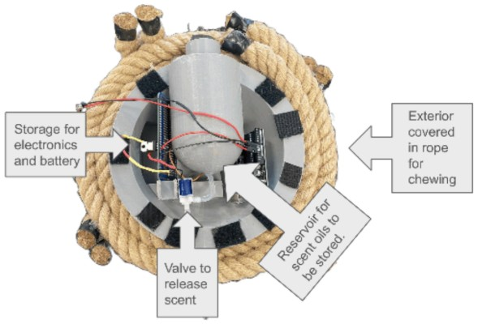
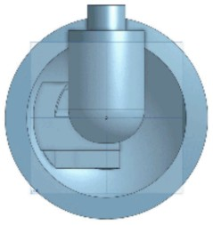

Tiger Enrichment Device
For the North Carolina Zoo's new tiger exhibit, my team of four built a rope-wrapped enrichment device that gives the animal physical and olfactory stimulation. A ball rolls on a track inside the frame, and a scent ball draws the tiger in. I handled the structural frame and the electronics. The device passed a 400 lb static load test and a five-minute water-soak with no loss of function.
Motivation
A client deliverable for a zoo keeper. The device has to survive a tiger, weather the outdoors, release scent on a schedule, and let keepers swap the ball without tools.
My role
I designed the PVC spine, the track system, and the ball-change mechanism, and I built the actuating Arduino scent system.
Technical approach
Structure & testing. I stacked 40 lb bags to 400 lb total on the frame with no joint or structural damage, then hosed the device for over five minutes with full function retained.
Scent electronics. A 3D-printed housing carries an Arduino Nano and a solenoid valve that doses 6 mL of essential oil every five hours. The battery compartment sits enclosed and shielded from impact.
What I would do differently. The tool-free quick-release pin missed its 2-minute target and ran inconsistently. My next revision machines the pin to a repeatable geometry, measures extraction force, and adds internal foam damping to the ball housing.

